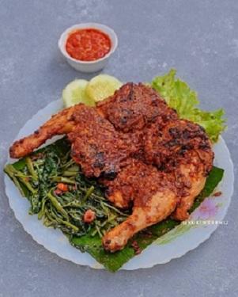
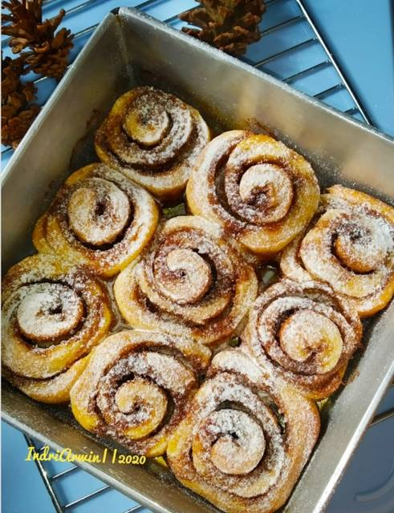
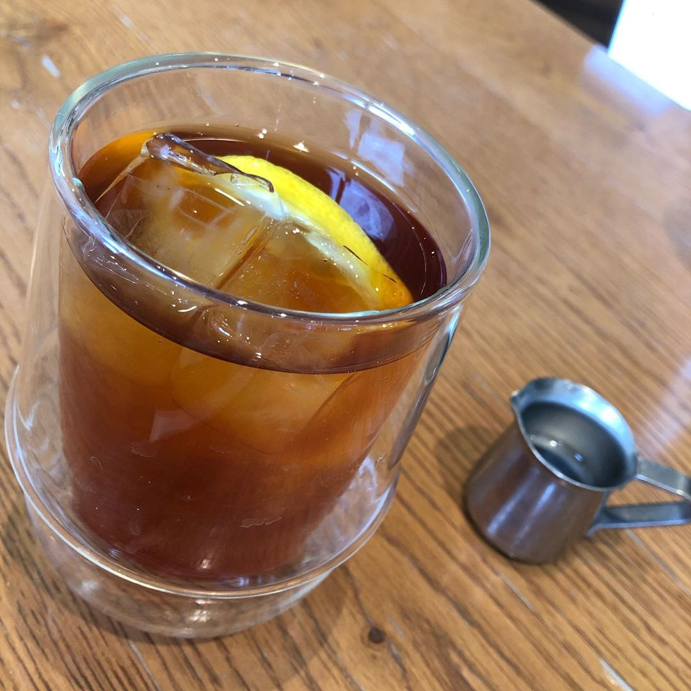

| NO | Nama Menu | Resep | Cara Membuat | Gambar |
|---|---|---|---|---|
| 1 | Ayam Taliwang |
1 ekor ayam ukuran sedang
Bumbu halus: 10 buah cabe merah 5 buah cabe rawit (sesuai selera) 3 butir kemiri 8 siung bawang merah 5 siung bawang putih 1 sdt lada 1 sdt ketumbar 1 ruas kecil kunyit 1 ruas jahe 1 ruas lengkuas 1 ruas kencur 1 sdt terasi 1 batang serai 3 lembar daun salam 3 lembar daun jeruk 1 buah tomat 65 ml santan instan 1 lt air Minyak untuk menumis 1 sdt Garam 1 sdt kaldu bubuk 1 buah gula merah |
1.Cuci bersih ayam potong menjadi 6-8 bagian, sisihkan.panaskan minyak tumis tomat masak sampai hancur & matang lalu masukkan bumbu halus,daun salam,jeruk & serai masak sampai bumbu harum & matang
2.Setelah bumbu matang Masukkan ayam aduk rata dengan bumbu sampai ayam berubah warna & pucat.Setelah itu Masukan santan & air aduk rata, masukkan garam,gula merah,kaldu bubuk.aduk rata kembali diamkan sampai kuah menyusut tes rasa. 3.Setelah air menyusut & mengeluarkan minyak kembali,angkat ayam pisahkan bumbunya dalam wadah terpisah.Panaskan teflon,olesi dengan sedikit minyak agar tidak gosong saat memanggang nanti.panggang ayam sampai 1/2 kering sambil diolesi sisa bumbu tadi balik bagian sisi belakang'y panggang & olesi bumbu kembali.angkat sajikan dengan lalapan & sisa bumbu utk dijadikan sambal. |
 |
| 2 | Cinnamon Roll |
400 gr terigu cakra
100 gr terigu kunci biru 150 ml UHT (sy 20 gr susu bubuk+air hingga mencapai 150 ml) 7 gr ragi instan 50 gr margarin 100 gr gula pasir 1 sdt garam 1 butir telur (saya 1 butir telur utuh + 1 kuning telur) 60 gr margarin 100 gr gula pasir (sy 80 gr) 50 gr gula palm 1 sdm kayu manis 1 sdm gula halus untuk taburan |
1.Siapkan semua bahan. Seduh susu dengan air agak panas, lalu masukkan margarin ke dalam susu agar mencair, sisihkan, tunggu susu menjadi hangat.
2.Cek ragi. Siapkan 50 ml air hangat dalam gelas, lalu masukkan ragi dan 1/2 sdt gula pasir, aduk rata. Diamkan 1-2 menit, jika cairan ragi berbuih dan naik, berarti ragi bisa dipakai. 3.Siapkan wadah, masukkan seluruh bahan adonan, lalu uleni hingga kalis. Setelah kalis, tutup adonan dengan kain bersih/plastik wrap. Kemudian istirahatkan 30-45 menit, hingga mengembang 2x lipat. 4.Dalam wadah lain, campur semua bahan olesan, aduk rata, sisihkan. 5.Kembali ke adonan roti, setelah 30-45 menit, kempeskan adonan untuk mengeluarkan udara didalamnya. Bagi adonan menjadi 2 bagian. 6.Ambil 1 bagian adonan, gilas berbentuk persegi, lalu oles dengan bahan olesan hingga rata. 7.Gulung adonan secara perlahan sambil ditekan dengan lembut, lalu cubit bagian akhirnya untuk mengunci agar tidak terbuka saat dipanggang. 8.Potong adonan menjadi 8-9 bagian. Ulangi langkah tsb pada satu bagian adonan yang lain. 9.Siapkan loyang (sy pakai loyang uk 20x20, 15x10 dan cup alumunium foil), olesi dengan margarin.Letakkan tiap potongan adonan didalam loyang, lalu tutup dengan kain bersih /plastik wrap.Istirahatkan lagi selama 15 menit. 10.Panggang dengan suhu 200°C sekitar 20-25 menit (sesuaikan oven masing2), atau sampai warnanya berubah kecoklatan. 11.Setelah hangat, taburi dengan gula halus. |
 |
| 3 | Lemon Tea |
250 ml air
1 jumput teh apa saja 2 sdm gulpas (me 2 saset sweetener tropicana) 2 sdt perasan jeruk nipis |
1.Rebus air hingga mendidih. Masukkan teh sedikit aja, biar warna nya cantik tidak terlalu pekat.
2.Masukkan gula ke dalam gelas dan masukkan perasan jeruk nipis dengan cara disaring. Kemudian masukkan teh dengan disaring. Aduk2. Nikmati lemon tea sederhana |
 |